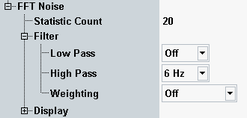

The following settings are specific for FFT noise measurements. They can be configured separately for analog and digital measurements. The description applies to both.

Configures the statistic count for FFT noise measurements. This parameter can also be configured within the general settings, see "General Settings (Analog)" and "General Settings (Digital)".
Remote command:The settings configure the individual filter stages of the AF analyzer. For a description of the filter types, see "AF Filter Settings".
Remote command:Analog measurement:
Digital measurement:
These settings configure the axes of the FFT noise diagram, select which traces are displayed in the bargraph and configure the markers.
These settings can also be accessed via hotkeys, see "Modifying Diagrams" and "Using Markers".
Remote command:Not applicable